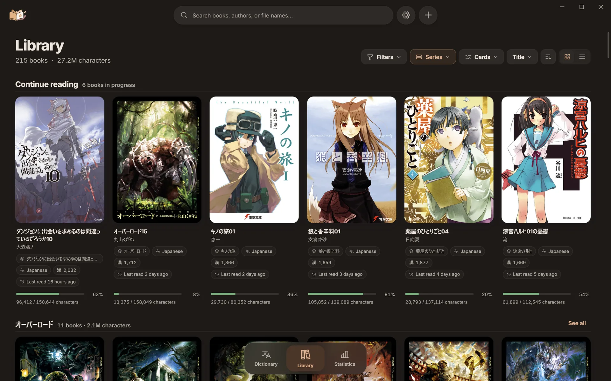

Komori
An EPUB reader for Windows and Android with dictionary lookup popups, reading statistics and Anki cards.




Features
-
Library
Covers, progress, search, filters and sorting. Groups by series, language or author; series and volumes are read from the books and their file names.
-
Reader
Continuous, semi-continuous, paginated and VN modes, in horizontal or vertical writing. Bookmarks, notes, highlights, find in book and an image gallery.
-
Lookup
A popup beside the word with readings, pitch accent, frequency, definitions and word audio. Words inside the popup can be looked up too.
-
Dictionaries
Ten lookup languages. Free starter dictionaries to download, or your own ZIP archives in the format used by popular pop-up dictionary extensions.
-
Anki
The popup’s + button adds a card with the reading, definitions, frequency, word audio and the book’s cover. AnkiConnect on Windows, AnkiDroid on Android.
-
Statistics
Characters or words read, time and speed. An activity calendar, a library overview and a character explorer.
-
Phone and PC
Paired with a code over your own network. The phone opens the PC’s books and copies its dictionaries; positions, bookmarks, notes and statistics sync both ways. How to pair
-
Appearance
Fonts, spacing and margins in the Reader, with fifteen themes and your own. Eight application themes and a custom one, and sixteen app icons.
-
Windows
Launch at startup, start in or minimize to the tray, reopen the last book. An interface in eleven languages.
-
Discord
An optional status that shows the book while you read.
-
Backups
Automatic snapshots, with export and import for moving to another computer.
-
Privacy
No account, telemetry or analytics. EPUBs and dictionary archives are read where they are and never changed. Privacy notes
Android
Phones, tablets and e-readers with 64-bit Android 10 or later
-

Reader
-

Lookup
-

Contents
-

Statistics
Gestures
- Tap a word
- Looks it up
- Tap the sides
- Turns the page
- Swipe
- Turns the page or scrolls
- Tap the middle
- Shows the Reader’s controls
- Long press text
- Note, highlight, copy or search
- Volume keys
- Turn the page
Themes
The application’s themes. Choose one to see this page in it.
App icons
Download
Version ,
Windows
64-bit Windows 10 and 11 · Installer (.exe)
The installer is not code-signed. If SmartScreen warns about an unknown publisher, choose More info, then Run anyway.
Android
64-bit Android 10 and later · Package (.apk)
Open the APK on the phone and allow your browser or file manager to install apps when Android asks.
Komori checks for a new version when it starts and asks before installing it. Updating keeps your data. Installation guide · Changelog · All releases